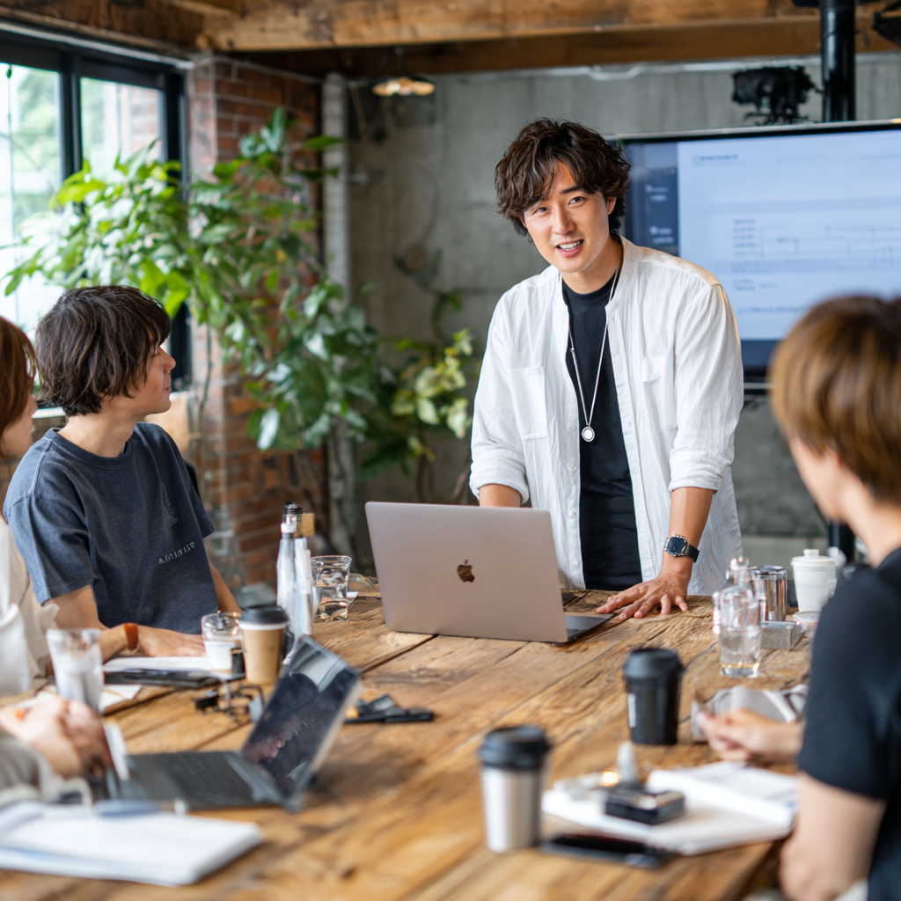

DX・業務改革支援
製造業A社：議事録作成業務の完全自動化

課題：毎週8時間の議事録作成作業、情報共有の遅れ（3-5日）
解決：現状分析 → AI音声認識ツール導入 → 自動化システム構築
成果：87.5%工数削減、即日情報共有、95%精度向上を実現
生成AI導入・研修支援
地方自治体B：職員の生成AI活用スキル向上

課題：文書作成スキルのばらつき、生成AI活用への不安
解決：スキル調査 → 個別研修設計 → 段階的スキル向上研修
成果：180名研修完了、40%時間短縮、95%満足度を達成
DX人材育成支援
サービス業C社：DX推進専任チームの立ち上げ
課題：DX推進人材の不足、業務改善の属人化
解決：人材選抜 → 集中育成プログラム → 専任チーム発足
成果：5名DX推進者育成、12件改善実施、25%効率向上